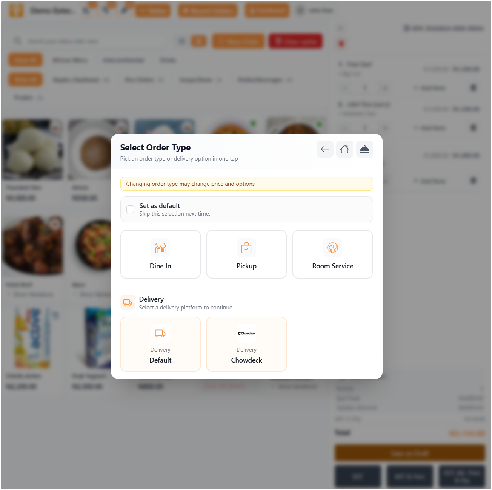

Manage Every Order
Dine-in, pickup, delivery, reservation, QR, and online ordering all sync into one workflow.
1.2M+ orders managedGoEatery brings POS, online ordering, QR menus, reservations, kitchen tickets, inventory, staff access, payments, and reports into a single calm operating system.

Dine-in, pickup, delivery, reservation, QR, and online ordering all sync into one workflow.
1.2M+ orders managedSend orders to kitchen stations instantly with printable tickets and clear order statuses.
Real-time KOT updatesTrack item performance, staff activity, payments, stock, and profit trends as they happen.
24/7 cloud access
POS that keeps service moving
GoEatery works on modern browsers, tablets, and phones, so owners and teams can manage tables, customers, menus, payments, reservations, kitchen activity, and reports anywhere.
Restaurant module ecosystem
GoEatery adapts to quick-service restaurants, lounges, bars, cafes, cloud kitchens, hotels, caterers, and multi-branch food brands.
Fast checkout, split payments, table billing, discounts, taxes, receipts, and cashier controls.
Route orders to the kitchen instantly, track preparation status, and reduce service delays.
Manage bookings, table availability, guest notes, seating, and room/table assignments.
Launch branded ordering pages for QR menus, pickup, delivery, and direct customer sales.
Monitor stock levels, ingredients, low-stock alerts, item availability, and branch movement.
Store customers, preferences, order history, delivery addresses, and communication details.
Give every staff member the right access level without exposing sensitive controls.
Understand sales, products, staff activity, payments, reservations, and kitchen throughput.
Operational intelligence
Turn daily restaurant activity into reports you can act on: sales history, item demand, payment mix, order speed, staff activity, customer balances, and inventory movement.
Admin, cashier, kitchen, manager, and custom roles stay permission-aware.
Start in minutes
Create your workspace, add your menu, invite staff, connect order channels, and watch GoEatery become your daily operating rhythm.
Add your business profile, branch, taxes, payment methods, and operating preferences.
Add categories, items, prices, modifiers, availability, images, and kitchen routing.
Invite your team, print QR codes, accept orders, and track everything from dashboard reports.
Need guided setup? GoEatery support can help configure menus, branches, staff, printers, and reports.
Talk to SupportPricing plans
Start free for 15 days. Upgrade when your team is ready.
For lean teams
For small and medium restaurants that need dependable daily order control.
₦15,000 / monthMost chosen
For growing restaurants, bars, and lounges that need stronger service workflows.
₦20,000 / monthBest value
One-time payment for restaurants that want long-term business features.
₦750,000Short answers for teams comparing POS, ordering, and restaurant management platforms.
GoEatery is a cloud restaurant and bar management platform for sales, POS, reservations, menus, online ordering, kitchen tickets, customer records, payments, and reports.
Yes. Owners can create separate staff logins and assign role-based access for cashiers, managers, kitchen teams, and admins.
Yes. You can create customer-facing ordering pages for QR menus, delivery, pickup, and direct online orders.
Yes. Supported plans include multi-location controls for menus, staff, orders, and reporting.
Start with GoEatery today and give your team one stylish system for ordering, service, kitchen coordination, payments, inventory, and growth.